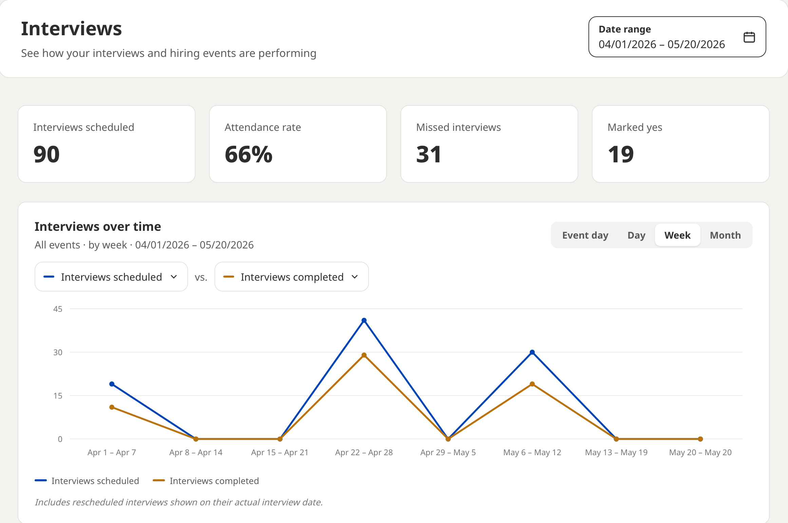

Analytics
How to read the Analytics page: the date range, the four summary cards, the interviews chart and the events table, and what each number counts.
Where to find it
Analytics in the left navigation answers the wider question: how are our events doing, and which ones went best. One event's own numbers are on its event report; Analytics looks across all of them.

Set the date range
The Date range control at the top right scopes the whole page: the four cards, the chart and the events table all follow it. It offers Last 7 days, Last 30 days, Last 90 days, Month to date, This year and All time, or you can set your own dates.
Analytics looks backwards. Future dates are not available, and upcoming events belong on the Events page until they have happened.
The four cards
| Card | What it counts |
|---|---|
| Interviews scheduled | Interviews that were booked in the period. |
| Attendance rate | The share of scheduled interviews that were actually held. Six scheduled with five missed reads as 17%. |
| Missed interviews | Booked interviews the candidate did not attend. |
| Marked yes | Interviews your team rated Yes. |
Attendance rate is the number to watch from one event to the next. It is the quickest single measure of whether people are turning up, and the one most affected by reminders and by how early candidates booked.
Interviews over time
The chart plots two measures against each other. Either line can be set to any of nine measures: interviews scheduled, completed, missed, candidate declined, rejected, marked yes, marked maybe, marked no, or interview requests. The second can be set to None (remove metric) to show a single line.
A control on the right groups the chart by Event day or by Day. Event day stacks your events on a shared clock, so the shape is a typical event day; Day lays them out on the calendar. A rescheduled interview is counted on the day it was actually held.
The events table
The table at the bottom breaks the same period down one row per event, which is the quickest way to see which event performed.
| Column | What it counts |
|---|---|
| Requests | Interview requests candidates sent you for that event. |
| Rejected | Requests you turned down. Counted beside Scheduled, not inside it. |
| Scheduled | Interviews that ended up booked. |
| Rescheduled | Interviews that moved off the event day. Already inside Scheduled. |
| Completed | Interviews that were actually held. |
| Missed | Booked interviews the candidate did not attend. |
| Declined | Booked interviews the candidate declined. |
| Marked yes | Interviews your team rated Yes. |
Scheduled equals Completed plus Missed plus Declined. Rescheduled sits inside Scheduled and Rejected sits outside it, which is why a row does not add up if you try to total every column.
Reading one event
Take an event row that reads 58 requests, 41 scheduled, 5 rescheduled, 29 completed, 12 missed and 9 marked yes. Forty-one of fifty-eight requests became interviews, so seventeen were rejected or never booked. Of the forty-one, twenty-nine were held and twelve were missed, an attendance rate of about seventy percent. Nine of the twenty-nine people interviewed were rated Yes. The five rescheduled interviews are already inside the forty-one; they simply happened on a different day.
Read across the row in that order each time, requests to scheduled to completed to marked yes, and the story of the event is there in one line.
What Analytics does not measure
JobFairX does not track hires, offers or cost. The outcome it measures is your team's rating of each interview, Yes, Maybe or No, recorded after the interview. Every completed interview carries exactly one rating, so yes plus maybe plus no equals completed in every view.
Using it
- Compare two events of the same type side by side in the table before you register for the next one.
- Watch attendance rate when you change something, such as slot length or an automation, to see whether it moved.
- Plot interview requests against interviews scheduled to see how many requests you are leaving unanswered.
- For the names behind the numbers, open the event report, which lists every candidate with their rating.
What to do next
Where to go from here.
- Event performance summary Reviewing how an event did and exporting the people who signed up.
- Running your event day What the lobby shows before and during an event, and how to run an interview.
- Setting up automations Messages that send themselves as candidates move through your process.
- Panel interviews Bringing more than one interviewer into the same video interview.
- Navigating the hiring platform A guided tour of the dashboard and the left navigation.
Still need help?
If something on this page does not match what you see in your account, contact JobFairX support and include your event name and date.